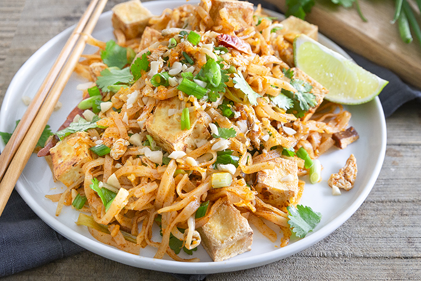

Pad Thai

Description
Pad thai is one of my favorite dishes to make. After trying many different recipes over the years, I have finally stumbled the one that is by far the best. I've tweaked it a bit and have come up with a nine-step dish that is layered, authentic, and affordable!
Ingredients
- Slice your block of tofu in half, and pat dry with papertowels. Slice it into cubes, then prepare the tofu cubes for frying by dipping it into flour, egg, and breadcrumbs. Put them in the frying pan, and turn them so each side is golden brown.